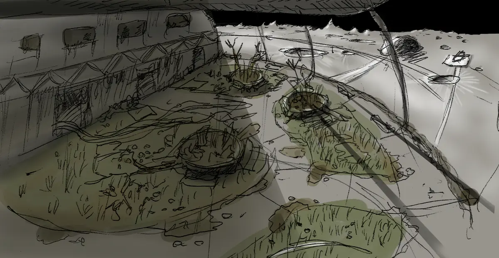
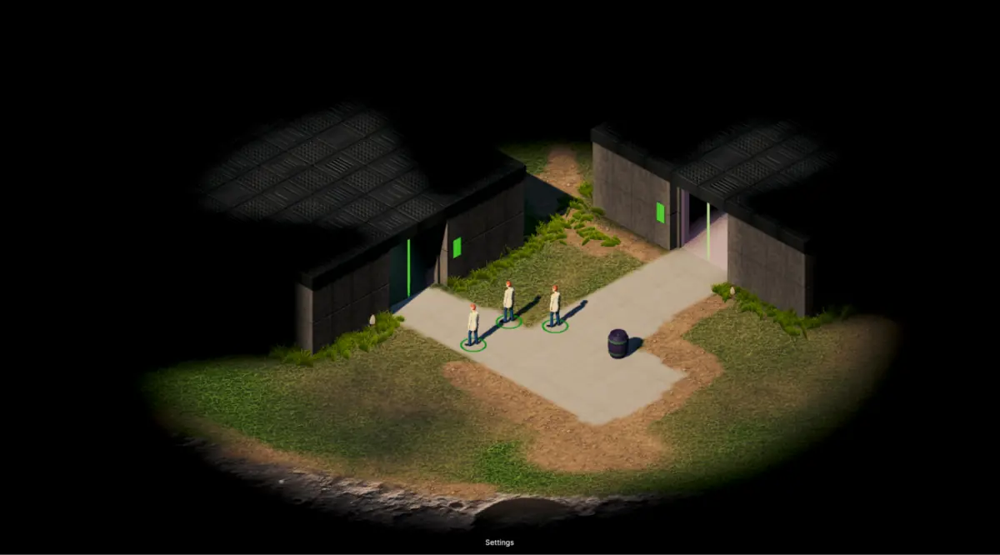
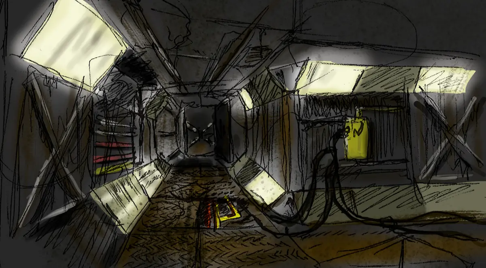

CYNTHION
An isometric party-based CRPG set on Earth's Moon, ~300 years after colonization.
Terraforming has been proven on Mars. The lunar colony is in slow decline — resources, talent, and attention have all shifted away, and the people left behind are only beginning to realise they've been quietly written off.
Lead a party through what's left. Talk to the people staying, the people leaving, the people who never had a choice. Pick a faction. Live with the answer.



Join the mailing list for updates.